Die Stube
Guten Tag. Womit dürfen wir heute anfangen?
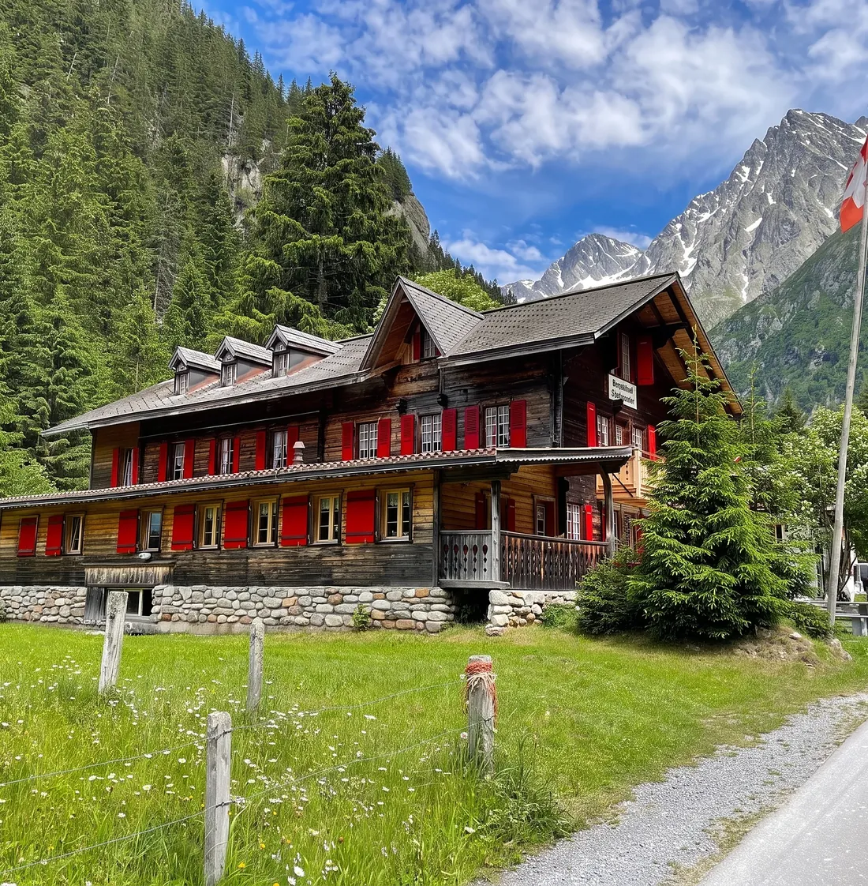
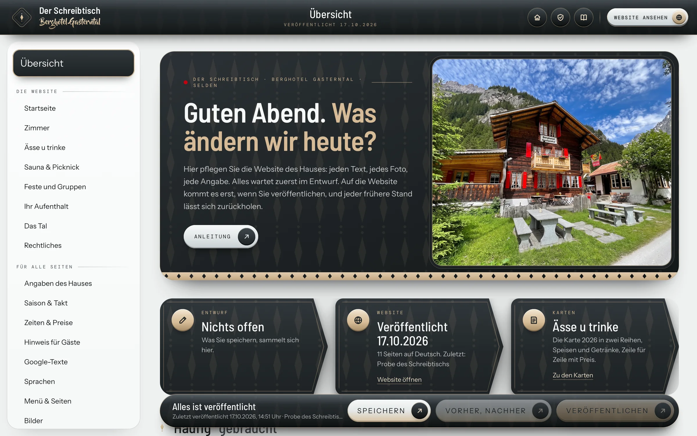
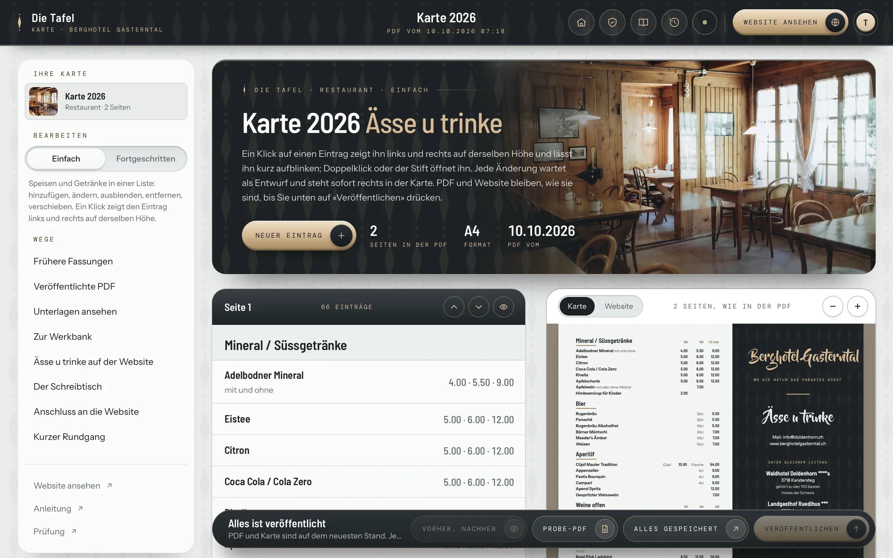
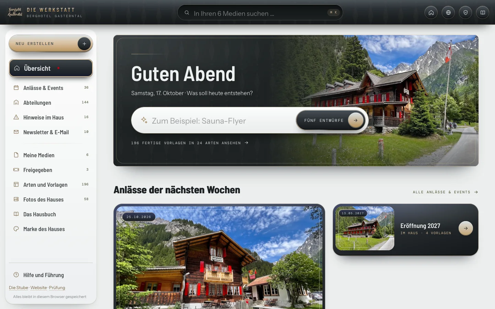
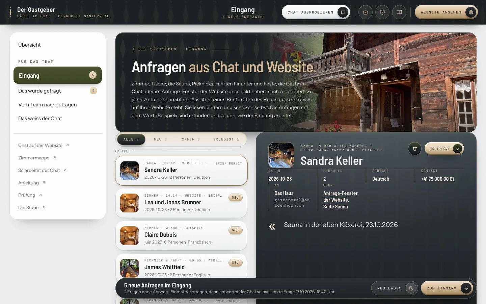
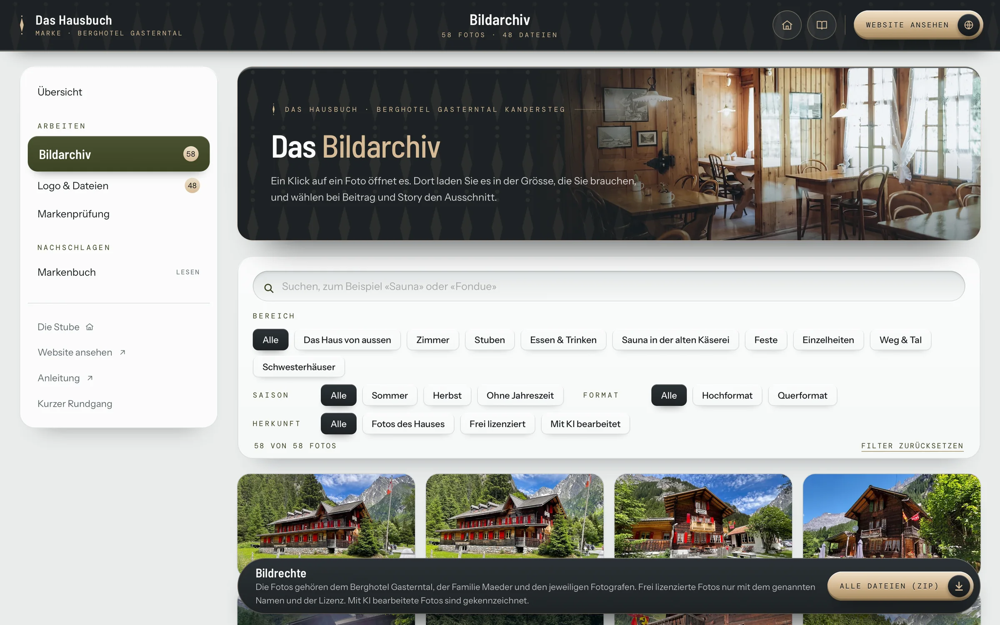
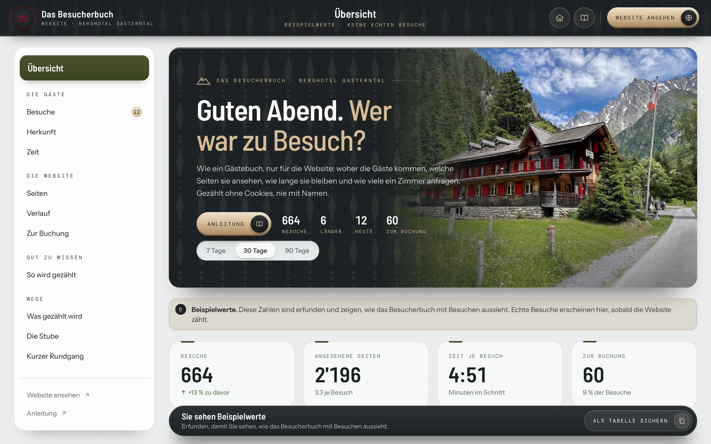
Heute–Besuche–zur BuchungDas Besucherbuch öffnen
Ein Klick oder die Taste 1 bis 6 öffnet das Werkzeug. Darunter stellt sich jedes einzeln vor.
Fenster 1 von 6 · Das Haus
Der Schreibtisch
Die Website des Hauses, Seite für Seite zum Anfassen: Texte, Fotos, Zeiten, Saison und Preise.
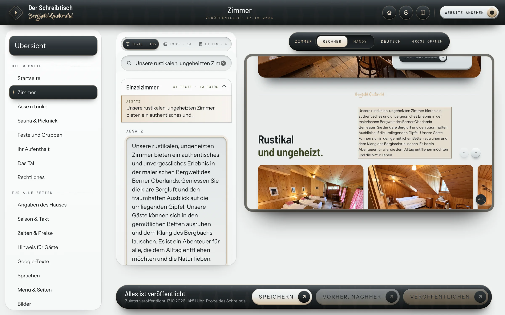
So geht’s
Text oder Foto ändernLinks den Bereich wählen, in der Vorschau auf den Text oder das Foto klicken, neu schreiben oder Foto tauschen, dann Speichern.
Zeiten und PreiseUnter Zeiten & Preise stehen Öffnungszeiten und Preise des Hauses untereinander. Einmal ändern, jede Stelle der Website folgt.
Listen des HausesZimmer und Preise, Saison und Takt, die Orte im Tal: was das Haus als Liste führt, steht im Reiter Listen des Bereichs.
Online stellenGespeichert ist erst ein Entwurf. Vorher, nachher zeigt den Unterschied, Veröffentlichen bringt ihn auf die Website.
Fenster 2 von 6 · Das Säli
Die Tafel
Die Karte des Hauses, vom Fondue bis zur Coupe Selden. Ein Knopf setzt die neue PDF.
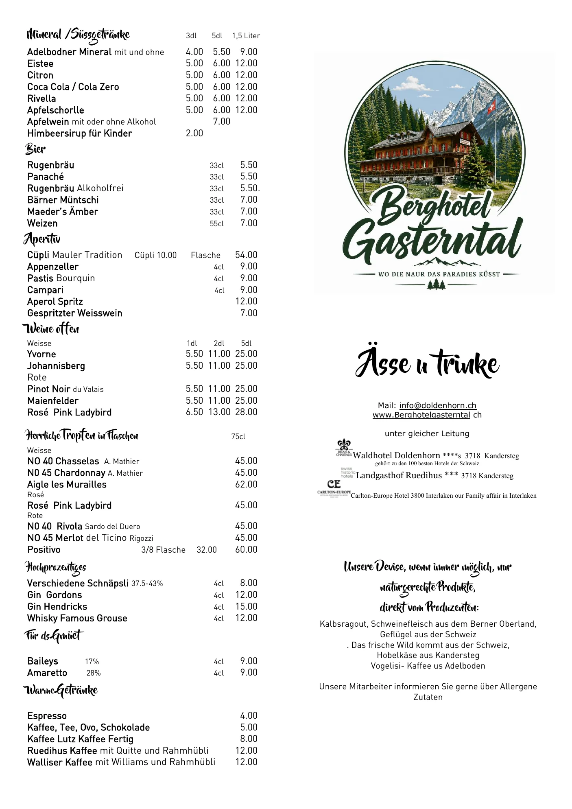
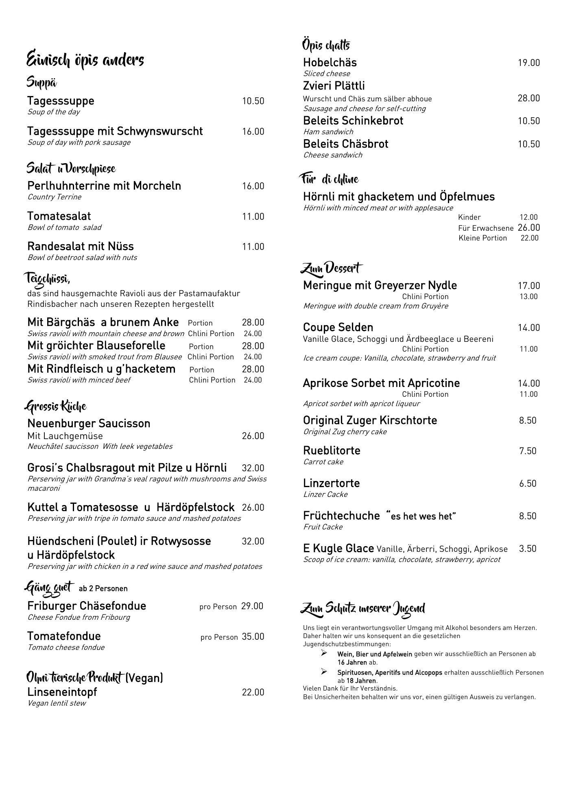
So geht’s
Gericht oder Preis ändernDie Karte 2026 wählen, im Modus Einfach den Eintrag anklicken, Name, Beschreibung oder Preis überschreiben. Rechts steht sofort die Karte.
Neues GerichtMit Neuer Eintrag oder bei der Rubrik mit Eintrag hinzufügen anlegen und mit den Pfeilen an die richtige Stelle schieben.
Vorübergehend wegGibt es ein Gericht gerade nicht, nehmen Sie es mit Ausblenden heraus. Es bleibt gespeichert und kommt später zurück.
Neue Karte druckenProbe-PDF zeigt die Karte vorab, Veröffentlichen setzt die PDF neu. Ist der Anschluss an die Website eingeschaltet, folgen auch die Seiten mit der Karte.
Fenster 3 von 6 · Die alte Käserei
Die Werkstatt
Ansichtskarten, Gutscheine, der Takt der Chluse und die Aushänge zur Sauna im Stil des Hauses, aus fertigen Vorlagen und ganz ohne Grafikprogramm.
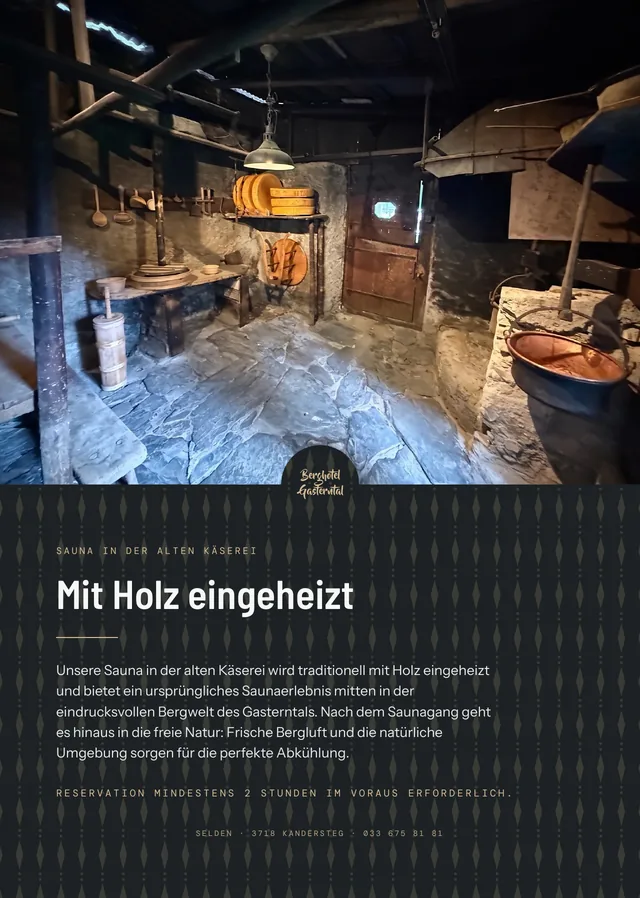
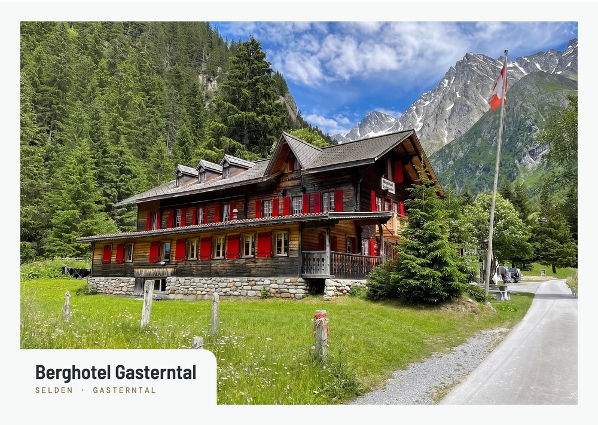
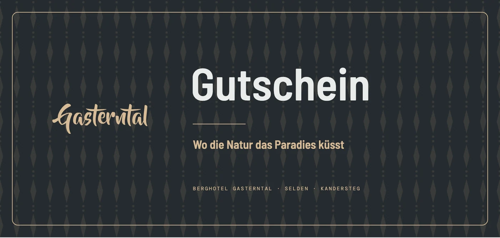
So geht’s
Sagen, was Sie brauchenOben ins Feld einen Satz schreiben, etwa: Sauna-Flyer, und Fünf Entwürfe drücken. Oder unter Arten und Vorlagen eine der fertigen Vorlagen mit Texten und Zeiten des Hauses nehmen.
Einen Entwurf wählenSie bekommen fünf Entwürfe im Stil des Hauses. Den passenden anklicken.
AnpassenIm Blatt auf einen Text oder ein Foto klicken und ändern. Unter Fotos des Hauses liegen alle Bilder der Website.
DruckenDruckfertig speichern legt eine PDF mit Beschnitt für die Druckerei an, oder Sie drucken selbst.
Ihre Arbeiten bleiben im Browser des Rechners, auf dem Sie sie anlegen.
Fenster 4 von 6 · Die Gaststube
Der Gastgeber
Die Rezeption im Chat auf jeder Seite der Website, und bei Ihnen der Eingang mit allen Anfragen aus dem Anfrage-Fenster.
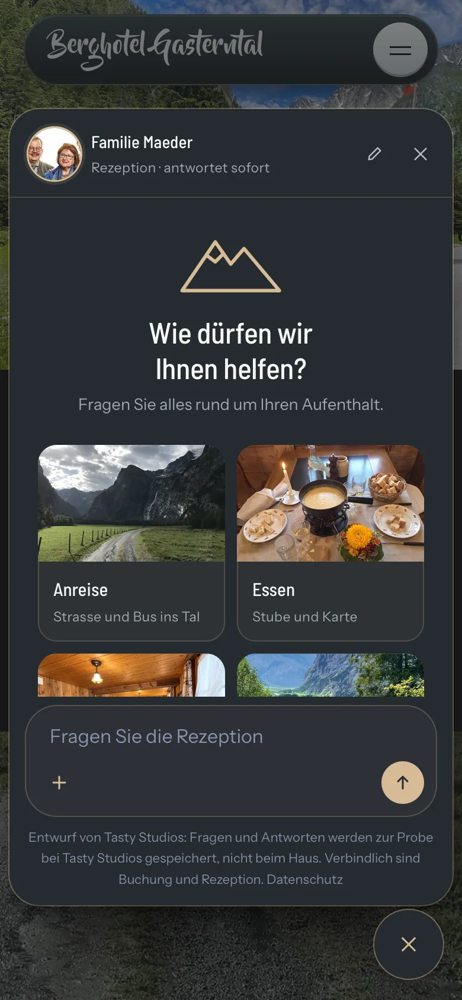
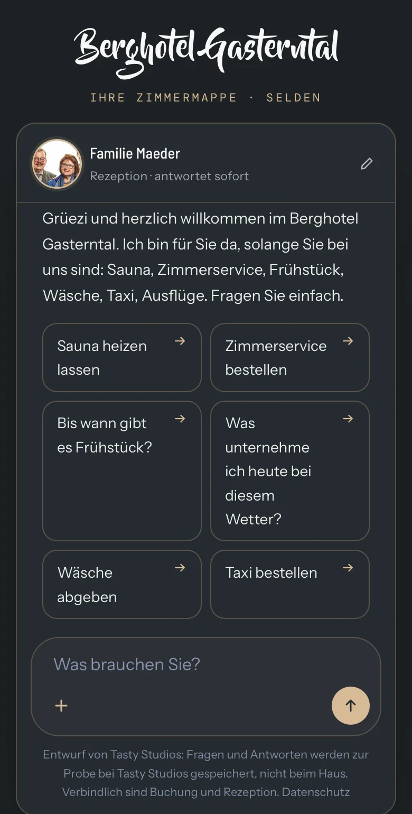
So geht’s
Gäste fragen im ChatAuf jeder Seite der Website und in der Zimmermappe können Gäste der Rezeption schreiben. Mit Chat ausprobieren sehen Sie selbst, was er antwortet.
Anfragen beantwortenZimmer, Tisch, Sauna, Picknick oder Fest: jede Anfrage steht im Eingang, mit einem Brief im Ton des Hauses. Als PDF speichern oder Text kopieren, verschickt wird nur, was Sie selbst schicken.
Lücken schliessenWusste der Chat etwas nicht, steht die Frage unter Das wurde gefragt. Mit Antwort nachtragen einmal eintragen, ab dann antwortet er selbst.
Fenster 5 von 6 · Das Zimmer
Das Hausbuch
Die Marke des Hauses zum Arbeiten, für Sie und für jede Agentur: Fotos, Schriftzug, Schriften und Farben.
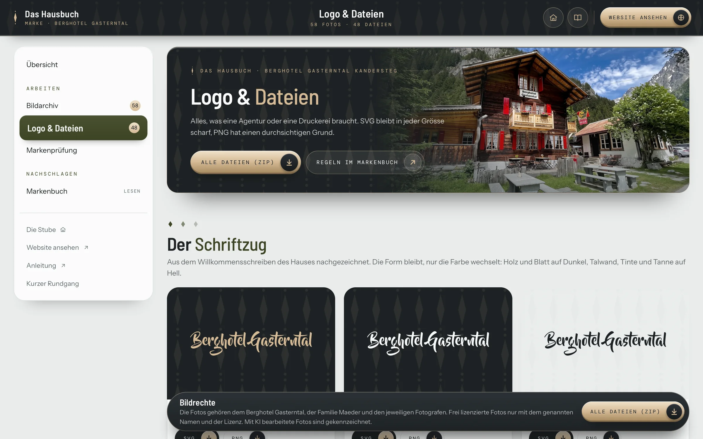
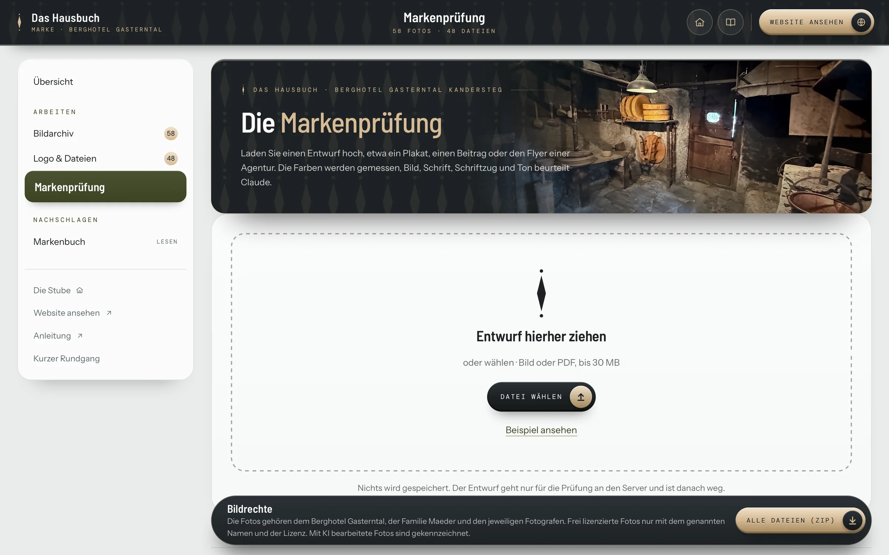
So geht’s
Ein Foto holenIm Bildarchiv ein Foto anklicken und die Grösse wählen: Instagram-Beitrag, Story, Website oder Druck. Bei bearbeiteten Fotos zeigt Vorher das Foto, wie es geliefert wurde.
Schriftzug weitergebenUnter Logo & Dateien liegen Schriftzug, Raute, Tapete, Farben und Schriften. Alle Dateien (ZIP) lädt alles in einem Paket für Agentur oder Druckerei.
Einen Entwurf prüfenIn der Markenprüfung mit Datei wählen ein Plakat oder einen Flyer laden. Das Hausbuch sagt Punkt für Punkt, was zum Haus passt und was nicht.
- Talwand#1D2224
- Schiefer#2C3136
- Tief#14181A
- Karte#262B2F
- Papier#E9ECEC
- Blatt#F6F8F8
- Kander#C7CFD3
- Holz#D6BB96
- Tanne#3B4423
- Tinte#1A1F21
- Laden#C5000F
Fenster 6 von 6 · Das Tal
Das Besucherbuch
Wer Ihre Website besucht: woher die Gäste kommen, was sie sich ansehen, wie lange sie bleiben und wie oft es weiter zur Anfrage geht.
- –Besucheauf der Website
- –Buchungsfenster geöffnet
- –weiter zu Booking.com oder als Anfrage ans Haus
- ·gebuchtzählen Booking.com und das Haus, nicht die Website
Gezählt ohne Cookies, nie mit Namen.